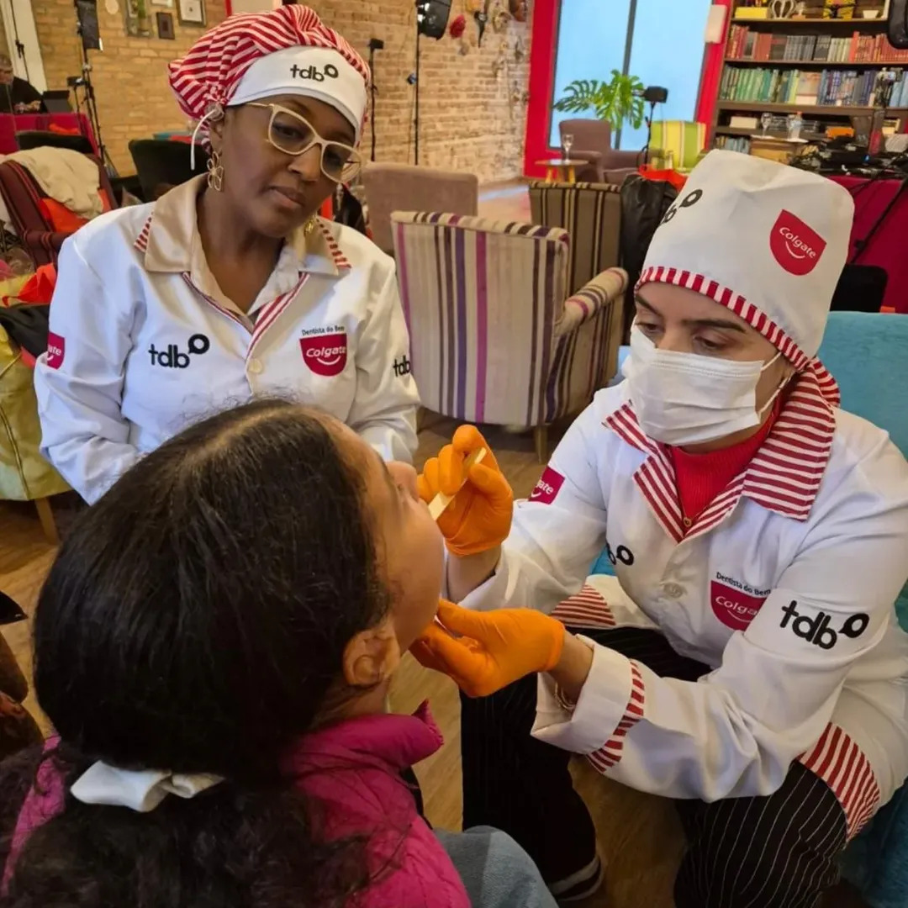

Sobre a Turma do Bem
A Turma do Bem promove inclusão social por meio da saúde bucal. Seus programas oferecem atendimento odontológico gratuito a jovens em situação de vulnerabilidade e a mulheres que tiveram a dentição afetada pela violência.
Conheça a ONG e o projeto